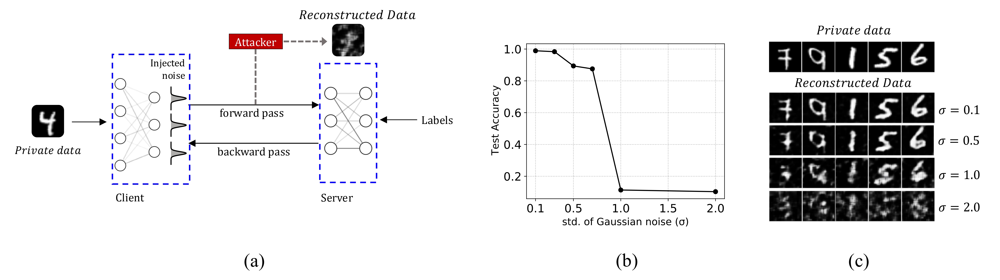
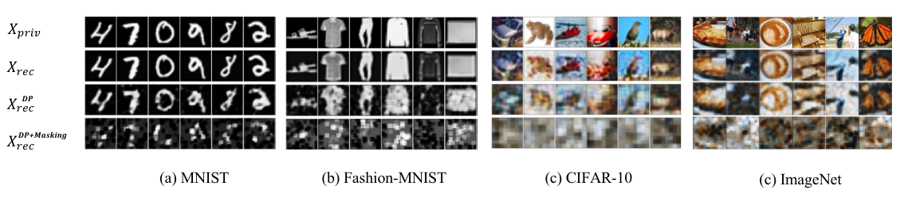

Training Results

Noise injection is applied in Split Learning to address privacy concerns about data leakage. Previous work protects Split Learning by adding noise to intermediate results during the forward pass. Unfortunately, noisy signals significantly degrade the accuracy of Split Learning training. This paper focuses on improving the training accuracy of Split Learning in the presence of noisy signals while protecting training data from reconstruction attacks. We propose two denoising techniques, namely scaling and random masking. Our theoretical results show that both of our denoising techniques accurately estimate the intermediate variables during the forward pass of Split Learning. Moreover, our experiments with deep neural networks demonstrate that the proposed denoising approaches allow Split Learning to tolerate high noise levels while achieving almost the same accuracy as the noise-free baseline. Interestingly, we show that, after applying our denoising techniques, the resulting network is more resilient to a state-of-the-art attack than the simple noise-injection approach.

| Task | σ | Best acc. (%) | λ=0.1 | λ=0.2 | λ=0.4 | λ=0.6 | p=0.1 | p=0.2 | p=0.4 | p=0.6 |
|---|---|---|---|---|---|---|---|---|---|---|
| CNN-MNIST | 0 | 98.96 (±0.13) | - | - | - | - | - | - | - | - |
| 0.3 | 98.46 (±0.07) | 97.63 (±0.27) | 97.13 (±0.23) | 96.07 (±0.10) | 95.42 (±0.17) | 98.93 (±0.14) | 98.88 (±0.19) | 98.86 (±0.11) | 98.77 (±0.09) | |
| 0.5 | 90.99 (±0.38) | 97.59 (±0.20) | 97.07 (±0.63) | 95.87 (±0.09) | 94.62 (±0.94) | 98.78 (±0.15) | 98.84 (±0.16) | 98.74 (±0.30) | 94.36 (±1.13) | |
| 0.7 | 81.85 (±0.77) | 97.11 (±0.15) | 96.30 (±0.36) | 90.95 (±0.22) | 88.88 (±0.28) | 98.31 (±0.38) | 98.62 (±0.23) | 96.67 (±0.14) | 90.51 (±1.09) | |
| ResNet20-CIFAR10 | 0 | 91.76 (±0.28) | - | - | - | - | - | - | - | - |
| 0.3 | 90.98 (±0.23) | 89.15 (±0.51) | 90.13 (±0.95) | 90.67 (±0.49) | 90.84 (±0.43) | 88.69 (±0.80) | 89.54 (±0.57) | 90.30 (±0.26) | 90.15 (±0.31) | |
| 0.5 | 89.72 (±0.49) | 89.93 (±0.52) | 90.50 (±0.74) | 90.33 (±0.72) | 89.97 (±0.62) | 88.21 (±0.50) | 89.55 (±0.73) | 89.98 (±0.98) | 89.65 (±1.10) | |
| 0.7 | 82.03 (±0.76) | 88.88 (±0.74) | 87.95 (±0.13) | 87.21 (±0.79) | 85.80 (±0.88) | 88.45 (±0.90) | 89.15 (±1.16) | 88.52 (±1.29) | 87.60 (±1.41) | |
| MLP-IMDB | 0 | 85.53 (±0.18) | - | - | - | - | - | - | - | - |
| 0.3 | 85.42 (±0.30) | 85.85 (±0.63) | 85.49 (±0.17) | 84.72 (±0.58) | 85.47 (±0.03) | 85.49 (±0.33) | 85.54 (±0.55) | 85.64 (±0.51) | 85.21 (±0.74) | |
| 0.5 | 84.85 (±0.63) | 85.44 (±0.68) | 85.35 (±0.84) | 84.06 (±0.58) | 84.55 (±0.72) | 85.55 (±0.69) | 86.00 (±0.36) | 85.18 (±0.62) | 85.92 (±1.22) | |
| 0.7 | 64.91 (±1.71) | 84.00 (±0.38) | 84.24 (±0.94) | 82.83 (±0.36) | 80.90 (±0.71) | 85.11 (±0.40) | 85.08 (±0.30) | 83.27 (±1.38) | 84.88 (±1.03) | |
| LSTM-Names | 0 | 81.24 (±0.25) | - | - | - | - | - | - | - | - |
| 0.3 | 82.31 (±0.81) | 83.76 (±0.58) | 82.35 (±0.27) | 81.17 (±0.31) | 80.51 (±0.59) | 80.52 (±0.36) | 82.05 (±0.40) | 81.63 (±0.08) | 82.23 (±0.83) | |
| 0.5 | 56.91 (±1.42) | 82.17 (±0.64) | 81.70 (±0.78) | 81.56 (±0.45) | 81.43 (±0.95) | 80.13 (±0.52) | 82.54 (±1.03) | 82.04 (±1.21) | 82.57 (±0.06) | |
| 0.7 | 47.65 (±1.97) | 81.56 (±0.34) | 80.87 (±0.58) | 81.07 (±0.81) | 66.68 (±0.57) | 79.35 (±0.35) | 81.15 (±0.75) | 80.40 (±0.75) | 46.59 (±1.33) |

@article{accuratesl,
title={Accurate Split Learning on Noisy Signals},
author={Xu, Hang and Maity, Subhajit and Dutta, Aritra and Li, Xin and Kalnis, Panos},
journal={Transaction on Machine Learning Research},
url={https://openreview.net/forum?id=in1T4BlzG9},
issn={2835-8856},
year={2026}
}
Copyright: CC BY-NC-SA 4.0 © Subhajit Maity | Last updated: 4 Apr 2026 | Template Credit: DreamBooth